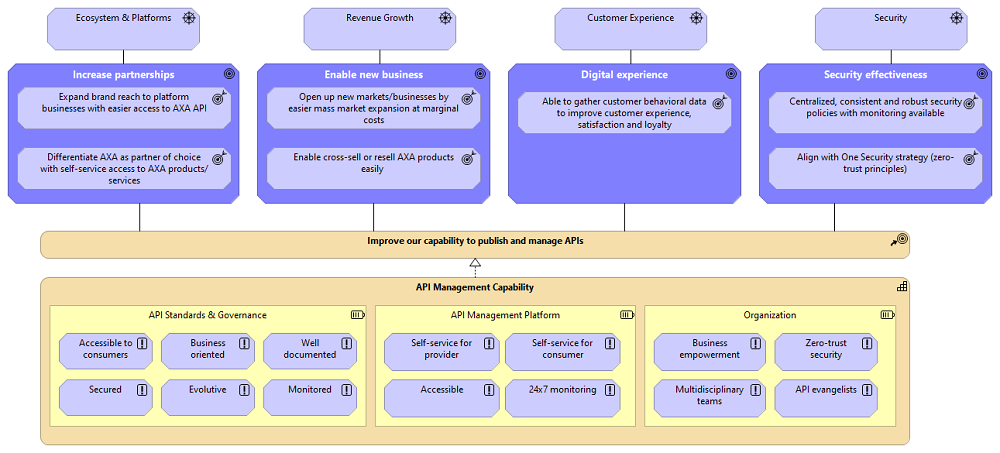
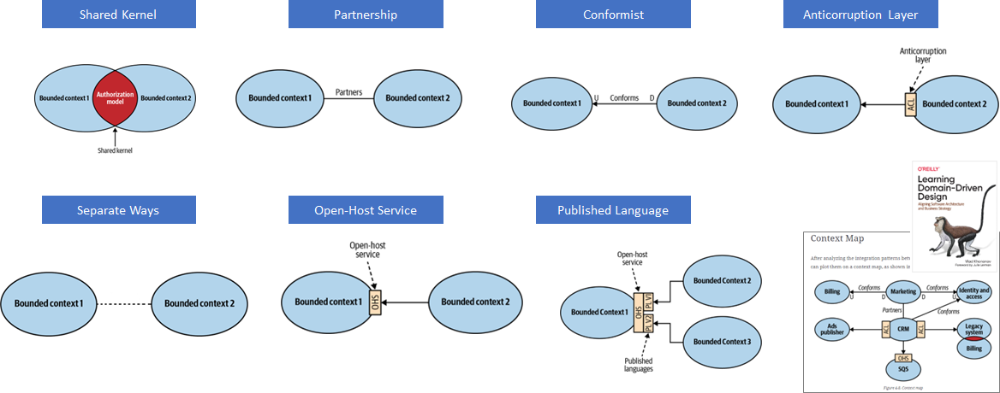
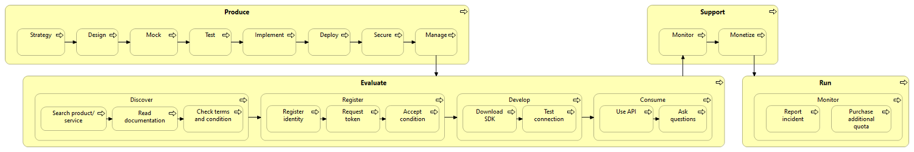
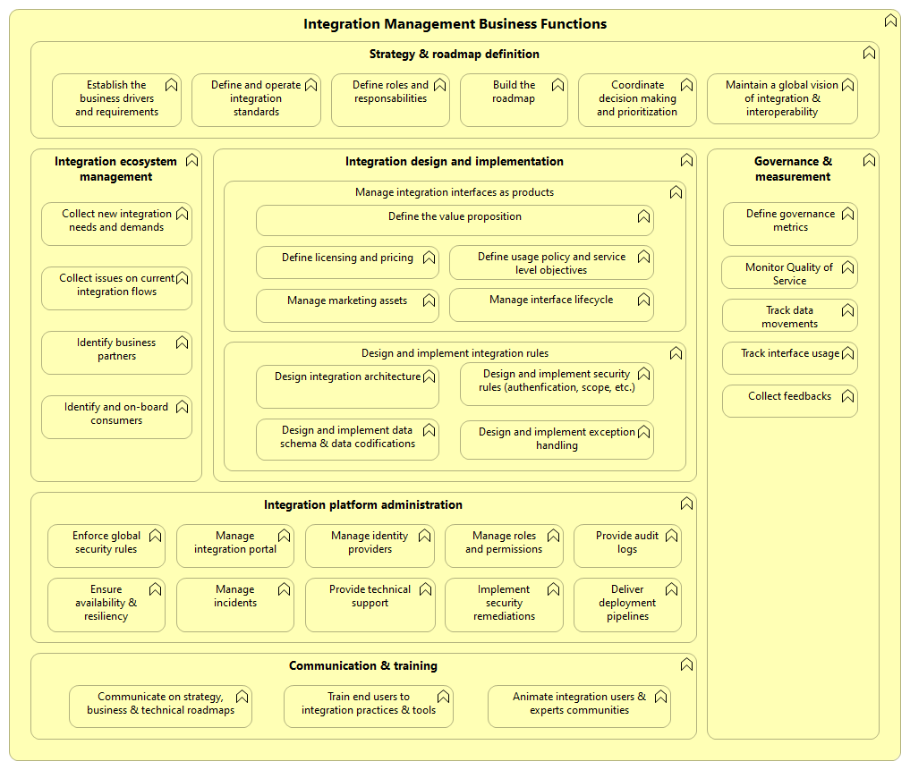
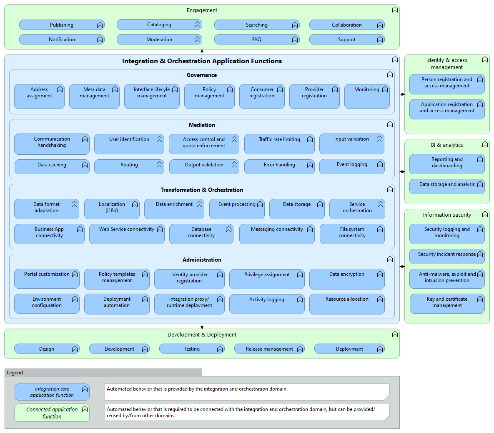
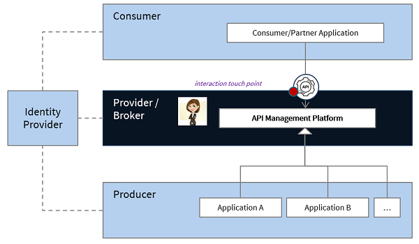
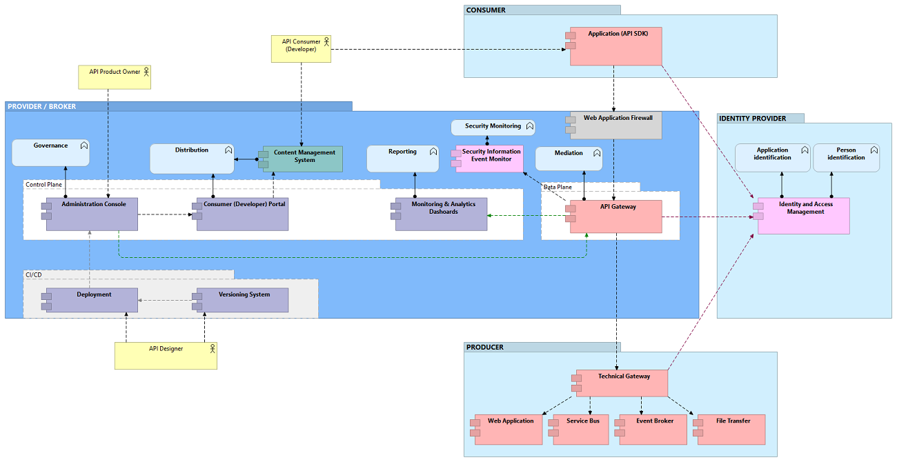

There is a new study ongoing related to strategic Enterprise integration patterns for AXA. For the latest version of the capability description please refer to this document:: AXA Enterprise Integration Capabilities Reference Model v3.xlsx
Integration is about processes related to the movement and consolidation of data and/or services within and between data stores, applications, and organizations. It considers data semantics (business understanding), representation (e.g., encoding, content display, etc.) and data structure (e.g., relational, domain-specific, XML, API). It consolidates data into consistent forms, either physical or virtual. Integration is the ability to “legally” share information and services. It focuses on achieving the ability to share information (TOGAF 9.2).
We live in an interconnected world. The need to adapt rapidly to business change has increased the necessity to decouple systems and to deliver more granular services that business partners can easily combined with other services to fulfill new business needs (ecosystems, partnerships, open insurance).
Exemples of integrations: “as a business partner, thanks to the interfaces provided by other business actors I can optimize an existing service for a specific segment of customers”, “as a business partner, I can integrate the service with another service, develop a mobile application when doesn’t exist”, etc.
The ability to support such collaborations is made possible through integration interfaces. Initially designed and implemented on-demand, interfaces are more and more included as part of the application core components. Actually, having a catalog of integration interfaces enables opportunities for partners to identify new opportunities and to test new value propositions to augment the value of the primary application.
There is an increasing demand for systems to interoperate by exchanging data. For these data exchanges to be meaningful, it is essential that the business information requirements that are met by the data stored in these systems are understood so that suitable data exchange mechanisms can be developed (ISO/IEC 19763-12:2015).
Good interface has a positive impact on the user adoption. Instead of pushing an implementation as an interface, designing with attention an integration interface (same attention as for an “End-User Interface”) is a must have. This is what we call the « API first » approach.
The rise of Web APIs. In the digital space, a value proposition can be as simple as an Application Programming Interface (API).
Integration require a high business and IT maturity. When we decouple systems we increase the workload needed for integration of services, and this effort increases for each new external service to integrate. By decoupling services to a low granularity we impact also the performance and we increase significantly the risk of failure for the overall business system, having direct impact for the user and for the service producer (reputational impact, sometimes also legal/compliance impact, impact on sales and revenue, etc.).
The objective of this paper is to consider what we have learn from the past in AXA and from the IT industry ; and to take the right guidelines to overcome challenges to AXA to reach the ambition with APIs.
The primary audience of this paper are:
Benefits of integration services are proven in terms of business agility, efficiency (reuse, accessibility), and additional market opportunities. The interface should be easy to discover and to consume by a developer, the time for a developer to discover and to consume a service (TTFAC - Time To First API Call) is a key metric to measure the value if the business change. Applying Business Intelligence & Analytics to integration interfaces is also important to continuously monitor and improve value of the service (useful usage statistics to integrate in the evaluation of the propensity to buy, propensity to leave, etc.).

AXA is already able today to deliver API to patners such as ING, Uber, etc. The objective now is to go further by publishing integration interfaces and packaging new services more rapidly.
Basic example: AXA GO API Portal.
For more information about API Maturity assessment, please refer to AXA API Maturity Model.
Cf. MuleSoft.
Service levels and service usage definition has to be considered from the early stage. API based system should be designed to support failures and should be monitored 24/7. Changing the grnualrity of services may requires to review the bsuiness process (for example to change from synchronous processing to asynchronous processing due to the degradation of performance and availability of distant services).
Large payloads: Web APIs (REST, SOAP, GraphQL, etc.) are not designed to support heavy data payloads (higher than 10 MB). For binary data transfer, other protocols must be considered such as FTP or HTTP with self-signed URL uploading-large-payloads-through-api-gateway, Google URL signer. Cf. also (Valet Key Pattern)[https://learn.microsoft.com/en-us/azure/architecture/patterns/valet-key)].
Identify clearly the business product owner of the API service, gather his/her requirements : before being a question about technology, the integration and APIs is first about ownership, governane and architecture topology. The failure often associated with ESB technology is not only about the technology but because most of the time it cames with a central infrastructure and central governance.
Smart endpoints and dumb pipes : A key lesson learnt from the past decade is to not consider interface services as an IT topic to be managed by a central team, but as a service to be provided directly by the application. At the level of a single application, it means that the business and IT owners of the application should consider and manage the digital interfaces (real-time, near-real time, batch) as an asset of the application and as part of their value proposition.
API graunularity is more an art than a science, test your API and collect feedbacks from multiple personas : Developer eXperience is key, should be tested with personas as it is subjective and may differ from one developer to another (depending on the background, knowledge of the data domain, etc.). Many aspects have to be taken into account to define the granularity of an API, such as business complexity, data confidentiality, message payload size, network traffic, etc.
Manage the API as part of the application (smart endpoints)
Deliver the API first, then develop the user interface
Select carefully your reference information model, consider international standards when available : the choice of the reference information model is key and has to be carefully selected from the begining of the project.
Name explicitely the concepts (self-documented, test-ability)
Elaborate translation maps between different contexts (global, local, backend, etc.)
Provide a lab environment so any developer can test the API, test the API before publishing to the customer
Security requirement is very high for partner APIs and open APIs, use a secured platform for external data and services exchange
For complex workloads consider to decompose the integration services (mixte of real-time and batch), consider performance from the begining
Select appropriate protocol, data format, intergation patterns (synchronous, pseudo-synchronous, asynchronous) to provide appropriate performance depending on the complexity of transactions and/or data volume
Use international standards for data formats and list of value : when exists, prefer international standards, e.g. I18N (ISO 8601) for data format Date/Time/Timestamp representations, ISO 3166 country codes, …
Do not underestimate the complexity to operate, consider carefuly non-functional requirements ability to operate
Web APIs (over HTTPS) are not designed to support big data payloads Google: “While streaming can help you work around the 10 MB request/response size limit enforced by the product, Apigee doesn’t recommend exceeding that limit when streaming.For payloads larger than 10 MB, Apigee recommends using a signed URLs pattern within an Apigee JavaCallout, illustrated here: https://github.com/DinoChiesa/ApigeeEdge-Java-GoogleUrlSigner”.
The business contract is related to what the developer needs to know before using the API. The business contract can be considered also the legal contract. For a good example, see the Twitter API. In the business contract the developer should find information related to banding guidelines, usage policies (rate limits, data copy and caching, etc.), licensing (model and cost), versioning policies (e.g. 1 major release evey 3 months, maximum 3 releases available, etc.).
The technical contract describes the protocols (REST, gRPC, …), data formats (e.g. ISO 8601 for dates), …
Service orientation design principles : Wikipedia Design Principles.
Standardized Service Contract : Wikipedia Standardized Service Contract.
Service Orientation : Wikipedia Service Orientation.
OpenAPI - Web RESTfull API Specification: www.openapis.org.
AsyncAPI - Event-Driven API Specification: www.asyncapi.com.
| Pattern | Description | Complexity | Pros | Cons |
|---|---|---|---|---|
| Synchronous request/response | As a consumer I call the service and wait for the answer to continue the process. | Low | Immediate response, simple to implemet and to support a sequential process | Not possible offline connection, requires very high avaialability and high performance |
| Asynchronous request/acknowledge/poll | As a consumer I ask you to start a process, then I will poll every x seconds to check if the process is finished. | Low | Fault tolerance as do not need to maintain active the communication | Process should work asynchronously, polling activity is not optimal in terms of traffic |
| Asynchronous request/acknowledge/callback | As a consumer ask you to start a process with a callback interface I provide so please call me back at the end of the process. | Medium | Fault tolerance, possible to continue the process | Requires client interface for the call back, client high-availability |
| Events streaming and sourcing | As a consumer I establish an active connection to your service so please send me specific topics events notifications through this connection. | Medium | Near-real time notification | Read-only (1-way publish/susbcribe) |
| Publish/subscribe | As a consumer I subscribe to listen to some events, and I can also share with you some events. | High | Flexibility (de-coupling) and scalability | Failure masking |
| Data push | As a provider I send the data to a consumer. | Low | Flexibility (de-coupling) and scalability including very high data volumes | Failure masking, no acknowledgement the data has been received by the consumer |
Source: Domain-Driven Design, Aligning Software Architecture and Business Strategy

Collaboration models, in descending order from the one that requires the most organizational coupling.
| Pattern | Nature of collaboration | Description | Pros (when) | Cons |
|---|---|---|---|---|
| Shared Kernel | Cooperation | The shared kernel is implemented so that any modification to its source code is immediately reflected in all the bounded contexts using it. | Consistent across all of the bounded contexts | Introduces a strong dependency between the participating bounded contexts, it should be applied only when the cost of duplication is higher than the cost of coordination |
| Partnership | Cooperation | Integration between bounded contexts is coordinated in an ad hoc manner. One team can notify a second team about a change in the API, and the second team will cooperate and adapt—no drama or conflicts | No one team dictates the language that is used for defining the contracts | Synchronization and communication challenges |
| Conformist | Customer–Supplier | The upstream team provides the integration contract, defined according to its own model (take it or leave it). | Simplicity, opportuity to rely on industry-standard, well-established model | Power imbalances between the upsteam team and downsteam team |
| Anticorruption Layer | Customer–Supplier | The downstream bounded context translates the upstream bounded context’s model into a model tailored to its own needs. | Scenarios in which it is not desirable or worth the effort to conform to the supplier’s model | Additional complexity consumer side (multi-layers) |
| Separate Ways | Customer–Supplier | The teams are unwilling or unable to collaborate. Possible manual ad-hoc integration. | Differences in the bounded contexts’ models, different nature of the duplicated subdomain | Data quality issues, performance issues, etc. |
| Open-Host Service | Customer–Supplier | To protect the consumers from changes in its implementation model, the upstream supplier decouples the implementation model from the public interface (possible multiple versions of the published language). | Upstream bounded context the freedom to evolve its implementation without affecting the downstream contexts | Additional complexity provider side (multi-layers) |
| Published Language | Authority | There is an authority or consortium that defines a language as standard (e.g.; RFC). Often coupled with Open-Host Service | All parties can rely on a high-quality industry or market standard. | Additional complexity for all parties to conform to the standard. |
Service layers and granularity decision are not easy as they depend on multiple architectural factors, such as functional cohesion, security rules, data payload, network topology, integration protocol, etc. Granularity is more art than science (Gartner, A Guidance Framework for Designing a Great API, 2019).
We must avoid “big monolith services” that are very difficult to change, with many impacts of a change for the clients, heavy data payload, etc. On the other side, to limit the number of calls and to enforce isolation (transactions), etc., we must avoid direct unitary access to data objects (CRUD operations) but consider for example the use of Data Transfer Objects (DTO).
Registry of integration services (portal)
Integration touch point (gateway, service end-point, etc)
Security protection (authentication, DDoS protection, etc.)
Monitoring (performance, nb of calls, etc.)
Tightly coupled applications make numerous assumptions about how the other applications work; when the applications change and break those assumptions, the integration breaks.(CF. ENTERPRISE INTEGRATION PATTERNS EXTERNAL REFERENCE).
File Transfer — Have each application produce files of shared data for others to consume, and consume files that others have produced.
Shared Database — Have the applications store the data they wish to share in a common database.
Remote Procedure Invocation — Have each application expose some of its procedures so that they can be invoked remotely, and have applications invoke those to run behavior and exchange data.
Messaging — Have each application connect to a common messaging system, and exchange data and invoke behavior using messages.




An interface is a product and a contract between a provider (or broker) and a consumer. Most of the time the consumer will be an application developer working for another product provider.
The interface management platform deliver a set of services to manage business plans (e.g.; quota, throttling), to secure the communication (e.g.; identity validation, data masking, security alerting), to optimize performance (e.g. routing, caching), to observe and monitor communications (e.g.; usage statistics, monetization).

AXA Belgium Event-Driven Architecture (EDA): AXA BE EDA description
Reference Architecture Description for the Event-Driven Architecture.
Introduction, Global API, Classifications, General Principles, Granularity, URI, Resources Formatting, Collections, HTTP Verbs, Status Codes, List Filtering, Sorting, Pagnication, Media Types, Versioning, Lifecycle Statuses
Source: Brij kishore Pandey, LinkedIn
| Protocol | Approach | Appropriateness |
|---|---|---|
| REST (Representational State Transfer) | Networked applications, stateless communication, standard HTTP methods | Ideal for public APIs with broad client support Best for simple, stateless operations Great for cache-friendly applications |
| GraphQL | Query language for APIs that allows clients to request only the data they need | Perfect when clients need flexible data querying Reduces over-fetching and under-fetching of data Suitable for applications with complex, nested data structures |
| SOAP (Simple Object Access Protocol) | Exchanging structure information using XML | Preferred in enterprise environments with strict security requirements Offers built-in error handling and retry logic Useful for stateful operations |
| gRPC (gRPC Remote Procedure Call) | High-performance, open source framework for RPCs using Protocol Buffers | Excellent for high-performance, low-latency microservices Ideal in polyglot environments (multiple programming languages) Supports bi-directional streaming |
| Webhook | Mechanism for one system to notify other systems in real-time, via HTTP callbacks when a specific event occurs | Perfect for event-driven architectures Enables receiving real-time updates from external services Eliminates the need for constant polling |
| WebSockets | Full-duplex communication channel over a single, long-live connection, real-time data exchange | Ideal for real-time, bi-directional communication Great for applications like chat, live updates, or gaming Allows frequent server-to-client data pushing |
| MQTT (Message Queuing Telemetry Transport) | Lightweight publish-subscribe messaging protocol designed for low-bandwidth, high latency, or unreliable networks | Designed for IoT and machine-to-machine communication Works well in unreliable networks or low-bandwidth environments Provides a lightweight publish-subscribe model |
| AMQP (Advanced Message Queuing Protocol) | Open-standard protocol for message-oriented middleware, facilitating message routing, queuing, and delivery | Suited for enterprise messaging systems Ensures guaranteed message delivery Handles complex routing and queuing scenarios |
| EDA (Event-Driven Architecture) | Transmit events among loosely coupled software components and services | Builds scalable, loosely coupled systems Manages unpredictable or bursty workloads effectively Integrates well with microservices architectures |
| EDI (Electronic Data Interchange) | Standards for exchanging structured business data between organizations electronically without humain interaction | Essential for B2B transactions in retail, healthcare, etc. Facilitates standardized business document exchange Crucial in supply chain management and logistics |
| SSE (Server-Sent Events) | Simple and efficient standard for server-push notifications over an HTTP connection | Enables one-way real-time updates from server to client Useful when bi-directional communication isn’t necessary Serves as a simpler alternative to WebSockets for server push |
| HTTP Verbs | Action | Idempotent |
|---|---|---|
| GET | Retrieves a resource from the server | Yes |
| PUT | Updates or Creates a resource | Yes |
| POST | Create new resources | No |
| DELETE | Delete a resource | Yes |
| PATCH | Applies partial modifications to a resource | Yes |
| HEAD | Asks for a response identical to a GET request but without the response body | Yes |
See also REST API design cheat sheet and REST API design tips.
| Pattern | Description | Recommended |
|---|---|---|
| Code flow + PKCE | Human via web browser to get a token, allows authentication of the Resource Owner and Client, without communicating the login/password of the Resource Owner to the Client application. Cf. IETF RFC6759, IETF RFC7636 | Yes |
| Device authorization | Designed for application without a web browser or are input constrained to the extent that requiring the user to input text in order to authenticate during the authorization flow is impractical (CLI, smart TV, media console, etc.). Cf. IETF RFC8628 | No |
| Resource Owner Password Credentials | Not secured: the application provide the credentials (username and password) of a specific resource owner (delegated permissions). For very specific use cases only (e.g.; application that needs to access to Office Sharepoint documents). | No |
| Client Credentials | Designed for application authentication: it is suitable for clients who are able to keep a secret (e.g.; web application running on a server). Application is the Resource Owner in this mode (application permissions). Cf. IETF RFC6749 | Yes |
{kind=link}
{kind=link}